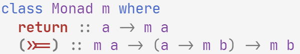

Generic Speculation
There are two principal evalutation stratergies: call-by-value and call-by-name. Other spin offs do exist, such as call-by-need, but this dichotomy is the most significant. As the name suggest, a call-by-value, or eager, stratergy evaluates the arguments to functions are first fully evaluated and the resulting value is passed to the function. On the other hand, call-by-name, or lazy, doesn't evaluate the arguments until they are needed in the body of the function, instead a reference is passed.
But call-by-value also cuts corners. It won't evaluate the second argument until the first is finished, pretty lazy if you ask me … Speculative evalutation, doesn't evaluate arguments in sequence but concurrently. It is used by the like of facebook when loading and checking lots of resources.
Selective Functors
A monad, from the perspective of functional programming, is a way to encapsulating side effects. Functions with the same type of side effects can be composed with the bind operator.  This operator is funadementally sequential; the side effects produced by the continuation may arbritarily depend on the first parameter.
The applicative class is slightly weaker. Although it captures a similar notion of effects, it's effects must be independent of what comes before. This seperation strengths our compile time knowledge, and we're in a better situation to perform analyses and optimisations such as staging. Applicatives are normally presented with an aplication operators (hence the name) but for our purpose the conjunction of parallel effects is more illuminating:
Selective functors, provide a suitable half-way house.
They are equipped with branching computations, but each branch must be predetermined.
In otherwords, they have access to the following select combinator which can indeed by evaluated speculatively.
Although Either is techincally enough, it feels a bit clunky, so I decided to write a generic branching combinator that is evaluted speculatively.
Generic Programming
To build this combinator we must first define the generic sum type:
This generalised algebraic datatype is parameterised by the types of each injection.
The first constructor allows us use the first injection, and the second allows us to shift injections.
Right 7 :: Either a Int can now be represented as SS (SZ 7) :: Sum [a, Int]